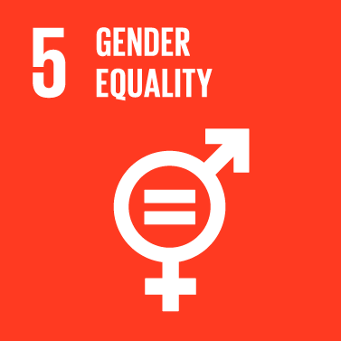

Goal 5: Achieve gender equality and empower all women and girls
While the world has achieved progress towards gender equality and women’s empowerment under the
Millennium Development Goals (including equal access to primary education between girls and boys),
women and girls continue to suffer discrimination and violence in every part of the world.
Gender equality is not only a fundamental human right, but a necessary foundation for a peaceful,
prosperous and sustainable world.
Providing women and girls with equal access to education, health care, decent work, and representation
in political and economic decision-making processes will fuel sustainable economies and benefit societies
and humanity at large.

Goals Targets
1) End all forms of discrimination against all women and girls everywhere.
2) Eliminate all forms of violence against all women and girls in the public and private spheres,
including trafficking and sexual and other types of exploitation.
3) Eliminate all harmful practices, such as child, early and forced marriage and female genital mutilation.
4) Recognize and value unpaid care and domestic work through the provision of public services,
infrastructure and social protection policies and the promotion of shared responsibility
within the household and the family as nationally appropriate.
5) Ensure women’s full and effective participation and equal opportunities for leadership at all levels
of decisionmaking in political, economic and public life.
6) Ensure universal access to sexual and reproductive health and reproductive rights as agreed in
accordance with the Programme of Action of the International Conference on Population and Development
and the Beijing Platform for Action and the outcome documents of their review conferences.
7) Undertake reforms to give women equal rights to economic resources, as well as access to ownership and
control over land and other forms of property, financial services, inheritance and natural resources,
in accordance with national laws.
8) Enhance the use of enabling technology, in particular information and communications technology, to
promote the empowerment of women.
9) Adopt and strengthen sound policies and enforceable legislation for the promotion of gender equality
and the empowerment of all women and girls at all levels.